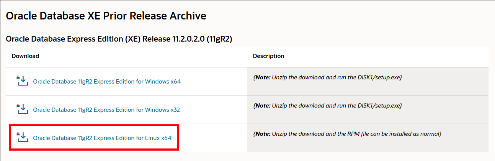
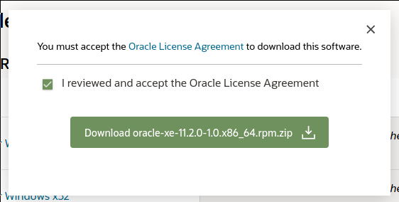

Ini menyangkut tugas kuliah, sebenernya ini untuk tugas remidial UTS kemarin, tapi berhubung saya tertarik jadi kita bahas saja. Dan karena saya merasa janggal juga, kenapa setiap tutorial installasi dari dosen selalu saja pake OS Jendela. Kurang gimana gitu :v
Spesifikasi
Karena sudah saya singgung diatas, disini saya menggunakan distro Arch Linux.
Kebutuhan
- Update repo
- Sediakan akun Oracle, kalo belum punya daftar dulu
- Koneksi internet (ini mah wajib :v)
Tutorial
Pertama, kita clone dulu oracle-xe dari repo AUR.
$ git clone https://aur.archlinux.org/oracle-xe.git
$ cd oracle-xeSetelah itu kita akan download oracle-xe-rpm.zip. Berhubung installernya tidak bisa didownload lewat terminal (karena harus login dulu), jadi untuk item ini kalian harus download manual di website resmi Oracle. Makanya diawal saya suruh kalian untuk daftar akun Oracle terlebih dahulu (jika belum punya).
 Pilih seperti pada gambar diatas.  Centang lalu download.
Setelah proses download sudah selesai, kita akan pindah file tadi ke folder oracle-xe yang telah kita clone sebelumnya.
$ mv Downloads/oracle-xe-11.2.0-1.0.x86_64.rpm.zip oracle-xeInstallasi, jalankan perintah berikut
makepkg -siSetelah installasi berhasil, sekarang saatnya konfigurasi, konfigurasi dapat dijalankan dengan perintah berikut.
@root> /etc/rc.d/oracle-xe configure
Tampilan konfigurasi kurang lebih akan seperti ini.
Oracle Database 11g Express Edition Configuration
-------------------------------------------------
This will configure on-boot properties of Oracle Database 11g Express
Edition. The following questions will determine whether the database should
be starting upon system boot, the ports it will use, and the passwords that
will be used for database accounts. Press <Enter> to accept the defaults.
Ctrl-C will abort.
Specify the HTTP port that will be used for Oracle Application Express [8080]:
Specify a port that will be used for the database listener [1521]:
Specify a password to be used for database accounts. Note that the same
password will be used for SYS and SYSTEM. Oracle recommends the use of
different passwords for each database account. This can be done after
initial configuration: #isi password kamu
Confirm the password: #konfirmasi password yang telah kamu tulis
Do you want Oracle Database 11g Express Edition to be started on boot (y/n) [y]:n
Starting Oracle Net Listener...Done
Configuring database...Done
Starting Oracle Database 11g Express Edition instance...Done
Installation completed successfully.Catatan, jika kosong berarti saya hanya menekan tombol Enter saja.
Lalu, kita akan menambahkan environment variable agar perintah sqlplus dapat dijalankan diterminal. Untungnya kita tidak perlu repot-repot menambahkannya sendiri karena, dari repo AUR yang sudah kita clone sebelumnya sudah terdapat perintah otomatis yang bisa kita jalankan.
source oracle_env.sh
Saatnya connect ke Oracle.
sqlplus /nologPada prompt SQL, koneksikan akun system dengan password yang kalian isi sebelumnya pada proses konfigurasi.
#perintah
connect system/password
#log
ConnectedYep, jika log connected berarti proses login sudah berhasil. Dan ini juga menandakan bahwa proses installasi juga berhasil.
Untuk keluar, bisa kalian jalankan perintah exit.
Untuk start, stop, restart, dll Oracle Server. Kalian bisa jalankan perintah berikut.
@root> /etc/rc.d/oracle-xe {start|stop|restart|force-reload|configure|status|enable|disable}
# pilih salah satu tanpa tanda {}Sumber literasi
Sekian tutorial dari saya kali ini, jika ada pertanyaan isi saja dikolom komentar. Terimakasih…